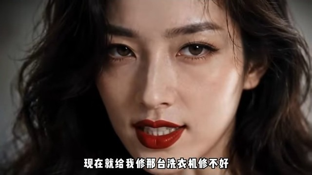
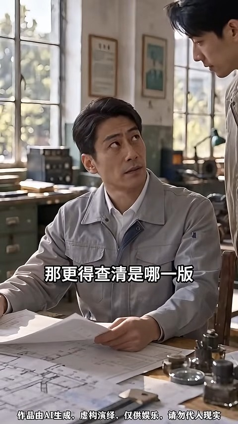
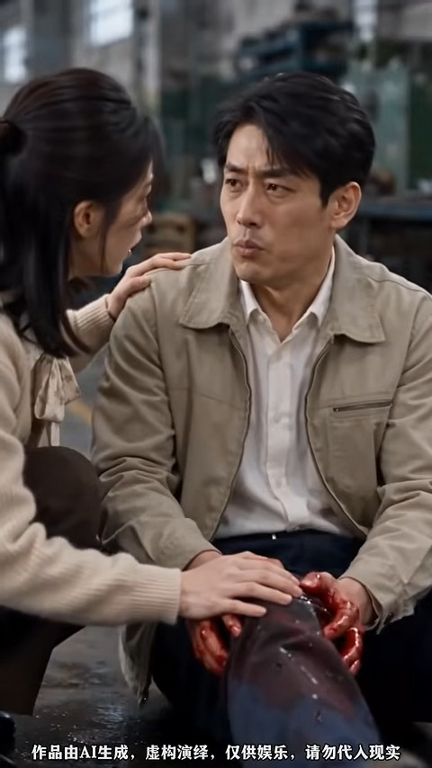
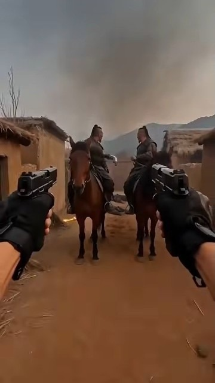
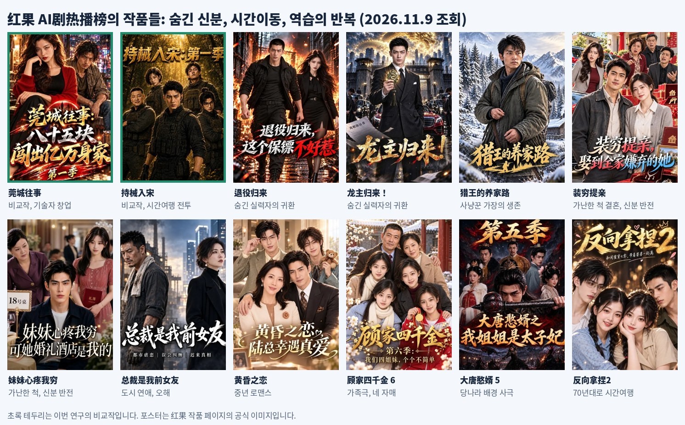
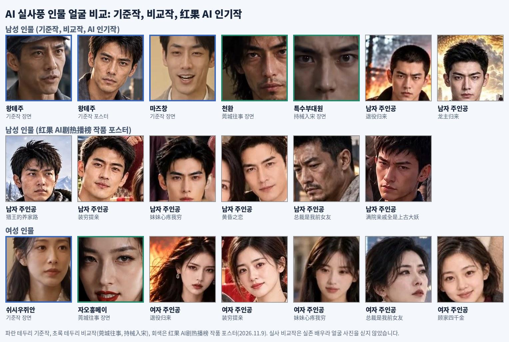

변수를 하나씩만 바꾼 비교작 4편과 서사 구조, 소재와 배경, 인물 이미지, 볼거리라는 분석 축 네 가지. 마지막에 우리가 발견한 것을 모았습니다.
비교 · 분석 축 ① 서사 구조
서사는 반복된다.반격의 배치는어떻게 다른가?
비교작은 기준작과 제작 방식(AI/실사)과 소재 중 하나만 다른 작품으로 골랐습니다. 모두 红果 순위에 오른 작품입니다. 무엇을 비교하려는지 분명해야 결론이 좁아집니다.
지표는 2026.11.9 조회. 포스터는 각 작품의 红果 공식 포스터이고, 작품명의 한국어는 팀의 의역입니다.
왜 이 조합인가
기준 vs 莞城往事
제작 방식과 장르가 같고, 주인공이 “배신당한 기술자”라는 점도 같습니다. 두 작품이 닮아 있을수록 “AI가 검증된 공식을 반복 생산한다”는 주장이 구체화됩니다.
기준 vs 小镇是非多
소재와 정서(배신, 성실한 재기)가 같고 제작 방식만 다릅니다. 여기서 나오는 차이가 곧 “AI 숏드라마만의 특징”입니다. 교수님 피드백에 가장 직접적으로 답하는 비교입니다.
持械入宋
AI가 공식을 반복할 뿐 아니라 새로운 볼거리도 만든다는 반대 방향의 근거입니다. 주장을 균형 있게 만들어 줍니다.
十八岁太奶奶驾到 5
최근 반년 동안 红果 총 열도 상위 10위에 들어간 유일한 실사작이라는 보도가 있습니다. 실사가 경쟁력을 갖는 조건을 보여 줍니다. (澎湃, 2026.11.9)
AI 비교작
《莞城往事》: 배신 → 기회 → 기술로 인정
2005년 둥관 기차역에 맨몸으로 도착한 주인공 천환. 여자친구에게 돈을 뜯기고 85위안만 남았습니다. 고향 사람마저 외면하지만, 집주인의 시험(“지금 세탁기 고쳐 봐”)을 통과하며 기술로 인정받기 시작합니다.
《一双手》 · 《莞城往事》 공통점
“배신당한 기술자가 자신의 능력으로 다시 일어선다”
다른 점은 회귀 대신 귀인(집주인)이 전환 장치라는 것입니다.
자료 7. 莞城往事(AI) 첫 5분. “배신당한 기술자가 바닥에서 기술로 인정받는” 구조가 기준작과 같습니다. (시간은 YouTube 합본 기준)출처: 红果短剧 / 莞城往事：八十五块闯出亿万身家 · 팀 제작(작품 화면 캡처 조합)
첫 반격이 나오는 시점: AI 3편은 9분 안,실사는 11분까지 없음
1~5화 초반부 관찰 결과 · 红果 공식 플레이어 1화 시작부터의 누적 시간 · 2026.11.9 팀 확인
점에 마우스를 올리거나 눌러 보면 장면 설명이 나옵니다. 같은 데이터는 아래 비교 기록표에 있습니다.
길이는 차이가 아니다: AI 87~117초,실사 129~131초
1~5화 한 화 길이(초) · 점 하나가 한 회차, 세로 막대가 평균 · 红果 공식 플레이어 기준
차이는 “짧아서”보다 “갈등과 보상을 어디에 놓느냐”에서 나옵니다.
회차 끝 갈고리(钩子): AI는 대결·위기로,실사는 여운으로
1~5화 마지막 장면의 유형 · 관찰 결과
대결 · 위기 다음 화로 끊어 넘김여운 인물의 표정과 여운으로 끊음그 밖
비교 기록표
각 작품 1~5화를 红果 공식 플레이어에서 직접 확인 (2026.11.9). 표가 넓으면 옆으로 밀어 보세요.
반전 횟수, 钩子 유형, 얼굴 유사도, 실사로 찍기 어려운 장면 수는 각 화를 여러 지점에서 확인한 팀의 관찰 결과이며 측정값이 아닙니다. 시간은 红果 공식 플레이어 기준입니다. YouTube 합본은 회차마다 앞뒤가 잘려 있어 시간이 10~20초씩 앞당겨집니다(예: 一双手의 회귀 장면은 红果 1:49, YouTube 1:30).
표에서 읽히는 점
갈등 제시 속도
AI 3편은 첫 갈등이 0~18초 안에 나오고, 첫 반격이 누적 2분 30초~8분 30초 안에 옵니다. 같은 배신 서사의 실사작 小镇是非多는 첫 갈등이 약 56초이고 5화(약 11분)까지 반격이 없습니다.
길이는 차이가 아님
한 화 길이는 AI 작품(평균 87~117초)과 실사(131초)가 크게 다르지 않습니다. 실사 1위 十八岁太奶奶驾到 5도 1~5화 평균 약 130초(173, 103, 157, 90, 124초)입니다.
엔딩 방식
AI 작품은 회차 끝을 대결이나 위기로 끊고, 실사작은 인물의 표정과 여운으로 끊는 경우가 많습니다.
AI 안의 두 갈래
一双手와 莞城往事는 “배신당한 기술자의 창업 역전”이라는 같은 공식을 반복하고, 持械入宋은 실사로 찍기 어려운 볼거리를 넓힙니다.
업계와 연구가 이미 확인한 서사 공식
3단 구조 90% 이상
南方都市报 빅데이터연구원이 2026년 4월 红果 인기 AI 만화극 100편을 분석한 결과, 90% 이상이 “压抑-开挂-打脸(억압, 치트키, 복수)” 3단 구조였습니다. 회귀와 타임슬립이 가장 흔한 출발 장치였습니다.
비교 기록표의 “1~5화 반전 횟수”(주도권이 바뀐 순간)를 장면으로 풀어 봤습니다. AI 3편에서 모두 6번의 반전이 있었고, 같은 배신 서사의 실사작 小镇是非多에는 한 번도 없었습니다.
반전의 공통 성질
누가 뒤집는가
억압받던 주인공이 스스로
가해자는 가장 가까운 사람(一双手의 아내와 친구, 莞城往事의 여자친구와 고향 사람)이거나 외부의 적(持械入宋의 맹수와 약탈자)입니다.
무엇으로 뒤집는가
자기 능력으로
기술(세탁기 수리, 공장 회로 진단), 현대 무기, 그리고 회귀라는 두 번째 기회. 귀인(莞城往事의 집주인)이 기회를 주더라도, 반전을 완성하는 것은 주인공의 능력입니다.
언제 뒤집는가
초반에, 그리고 다음 화로 이어서
첫 반격은 누적 2분 30초~8분 30초 안에 오고, 회차 끝은 대결이나 위기로 끊어 다음 반전을 예고합니다.
반전의 종류별 횟수 · 1~5화 관찰 결과를 묶은 것
관계의 주도권을 되찾는다2회一双手 · 추천 자리 양보 거부, 파혼 선언
기술로 실력을 증명한다2회莞城往事 · 세탁기 수리, 공장 회로 진단
회귀로 다시 시작한다1회一双手 · 1화 끝 “十五年前”
힘으로 제압한다1회持械入宋 · 맹수 제압
실사 비교작0회小镇是非多 · 억압이 쌓이는 단계
비교 기록표의 반전 기록(一双手 3회, 莞城往事 2회, 持械入宋 1회)을 성질에 따라 네 갈래로 묶었습니다. 6회뿐인 작은 표본이라, 순위보다 “어떤 종류의 반전이 있는가”로 읽어 주세요.
장면으로 보는 반전
유형마다 직전의 억압과 반전 장면을 나란히 놓았습니다. 장면 시간은 YouTube 합본 기준입니다(红果 공식 플레이어보다 10~20초 이릅니다). “영상으로 보기”를 누르면 해당 구간 몇십 초만 재생됩니다.
01
관계의 주도권을 되찾는다
一双手闯出一片天 · 2화 첫 반격, 5화 파혼 선언
2:00 억압약혼 자리, 진급 추천을 양보하라는 요구가 되풀이된다
→
2:30 반전“선반공만 십수 년” 이번에는 양보를 거부한다
이어지는 반전
5화 마지막 대사 “这个婚到此为止”(이 결혼은 여기까지). 파혼을 선언하며 관계를 스스로 정리하고, 회차는 대결 장면으로 끝납니다.
영상으로 보기
전생에서 양보만 하던 바로 그 자리에서 “이제야 내 차례야”라고 말합니다. 억압의 상황을 그대로 다시 보여 준 뒤 다른 선택을 하게 해, 짧은 시간에 보상 한 단위가 완성됩니다.
02
기술로 실력을 증명한다
莞城往事 · 2화 0:53 무렵 첫 반격 (红果 누적 약 4분)
3:12 억압고향 사람마저 “방세 빌려줄 순 없지” 외면한다
→

5:10 전환집주인의 시험 “지금 세탁기 고쳐 봐”
→
5:22 반전세탁기를 고치며 기술로 인정받기 시작한다
같은 성질, 기준작의 후반
40:00 반전수리점에서 자기 손으로 부품을 만든다

1:20:00 반전도면을 검토하며 기술과 품질을 다툰다
영상으로 보기
회귀 같은 초자연적 장치 없이, 귀인(집주인)이 준 기회를 기술로 붙잡습니다. 一双手도 후반부에서 같은 방식으로 인정받습니다. 두 작품이 반복하는 공식, “배신당한 기술자가 자신의 능력으로 다시 일어선다”가 반전 장면에서 드러납니다.
03
회귀로 다시 시작한다
一双手闯出一片天 · 1화 끝 (红果 1:49)

0:50 억압아내가 남편이 아닌 친구의 다리를 먼저 돌본다
→
1:10 억압“즈창 먼저 보내” 주인공은 뒤로 밀린다
→
1:30 반전“十五年前” 죽음 직후 15년 전으로 돌아간다
영상으로 보기
억압이 가장 커진 순간(죽음)에 이야기 전체를 되돌립니다. 이 반전은 그 자체로 보상이라기보다, 뒤의 반전들(양보 거부, 파혼, 창업)을 가능하게 만드는 출발 장치입니다. 南方都市报의 분석에서도 회귀와 타임슬립이 가장 흔한 출발 장치였습니다.
04
힘으로 제압한다
持械入宋 · 5화 무렵 첫 반격, 맹수 제압 (红果 누적 약 8분 30초)
8:00 위기표범 습격. 화면에 “AI制作，无真实动物受伤” 표기
→

12:00 억압약탈자 기병이 마을을 습격한다
→
13:00 반전현대 화기로 반격한다
영상으로 보기持械入宋 영상은 장면 캡처와 다른 업로드(《持械入宋：第一季》 합본, Nano Review)라 재생 시간이 캡처의 시간과 다릅니다.
맹수와 약탈자라는 외부의 적을 시간여행으로 가져온 현대 무기로 압도합니다. 반전 장면이 곧 실사로 찍기 어려운 볼거리(맹수, 기병 전투)이기도 해서, 서사의 보상과 AI의 볼거리가 한 장면에서 겹칩니다.
0
실사 비교작: 반전 대신 억압이 쌓인다
小镇是非多之同床异梦 · 1~5화(누적 약 11분, 10:56) 반전 0회
같은 “아내의 배신 + 성실한 남자의 재기” 서사지만 5화까지 주도권이 한 번도 바뀌지 않습니다. 회차 끝도 폭로 암시, 위기, 여운으로 끊깁니다. 실사작은 장면 캡처와 영상을 싣지 않아 기록으로만 비교합니다.
해석
AI 3편의 반전은 모두 주인공이 자기 능력(기술, 무기, 두 번째 기회)으로주도권을 되찾는 순간입니다. 업계 분석의 “억압, 치트키, 복수” 3단 구조와 司若 외(2026)의 “소원 성취”가 실제 장면에서 어떻게 나타나는지 보여 줍니다. 다만 一双手의 반전은 복수보다 거부와 인정에 가깝다는 점이 이 작품만의 색입니다.
출처: 팀 관찰 기록 (红果 공식 플레이어, 2026.11.9) · 장면: YouTube 합본 화면 캡처, 출처 红果短剧 / 각 작품명 · 南方都市报, 2026.4.28 · 司若, 高祎伟 (2026) 《全球传媒学刊》 13(3)
분석 축 ② 소재와 배경
재벌도 신선도 아닌,공장의 선반공
기준작의 무대는 국영 기계공장, 주인공은 선반공입니다. 진급 추천, 수리점 창업처럼 평범한 노동자의 이야기입니다. 이런 소재는 기준작만의 것일까요?
AI 실사풍 드라마의 주력 소재. 2026년 9월 红果 AI真人剧榜 상위 20편을 보면, 현대 도시, 1980~90년대, 농촌이 주력이고 중장년 시청자를 겨냥합니다. 남성향 작품은 《1992，我不做养子了》, 《重回82》, 《重回98》처럼 “그 시대로 회귀해 가족을 부자로 만드는” 이야기가 많습니다. (塔猴, 2026.9.8)
연대극의 정서. 연대극은 윗세대에게는 집단 기억, 중간 세대에게는 정서적 치유와 현실 반영으로 소비된다는 제작사 인터뷰가 있습니다. (人民日报海外版/光明网, 2026.3.20)
평범한 직업 주인공. 수도전기 기사, 직장인, 창업자가 주인공인 “현실 직업극”이 늘고 있으며, 红果 AI 창작 프로그램이 어떤 소재든 최소 수익을 보장해 틈새 소재 제작을 부추긴다는 분석입니다. (新浪, 2026.11.5)
같은 계열이 순위에 반복된다. 11.9 AI剧 상위 20편만 봐도 《莞城往事》, 《猎王的养家路》, 《破产返乡：我靠赶山养女逆袭》 등이 “회귀 + 연대 + 남성 노동자/가장” 계열입니다. (红果 AI剧热播榜)
하위 도시 시청자는 대부분 40대 이상이며 감정적 울림을 가장 중시한다는 업계 인터뷰도 있습니다. (Caixin, 2026.6.1)

자료 6. 红果 AI剧热播榜에 오른 작품들 (2026.11.9 조회). “돌아온 실력자”, “가난한 척한 부자”, “시간이동” 같은 설정이 제목에서부터 반복됩니다. 초록 테두리는 이번 비교작입니다.출처: 红果短剧 / 각 작품 공식 포스터 · 팀 제작(작품 화면 캡처 조합)
해석
기준작이 주는 보상은 막연한 “사이다”가 아니라 노동, 기술, 세대 기억,다시 사는 인생이라는구체적인 종류입니다. 중장년 이용자가 많은 플랫폼에서 이 소재는 공감의 통로가 됩니다.
분석 축 ③ 인물 이미지
비슷한 얼굴,그래도 본다
기준작의 남녀 주인공은 모두 전형적인 미형 얼굴입니다. 다른 AI 작품의 주인공들과 나란히 놓으면 매끈한 피부, 또렷한 이목구비의 비슷한 얼굴로 모입니다.

자료 3. AI 실사풍 인물 얼굴 비교. 기준작(파란 테두리), 비교작 莞城往事와 持械入宋(초록), 红果 AI剧热播榜 작품 포스터(회색, 2026.11.9)의 인물이 매끈한 피부, 또렷한 이목구비의 비슷한 미남미녀형으로 모입니다. 실사 비교작은 이 얼굴 비교에 넣지 않고 비교 기록표의 관찰 결과로 대신합니다.출처: 红果短剧 / 一双手闯出一片天, 莞城往事, 持械入宋 장면 및 AI剧热播榜 작품 포스터 · 팀 제작(작품 화면 캡처 조합)
자료 4. 같은 인물(옷차림 기준)인데도 장면마다 얼굴이 조금씩 달라집니다. 포스터 얼굴은 다른 AI 작품의 남자 주인공(자료 3)과 더 닮아 있습니다. “고빈도 AI 얼굴”과 “인물 일관성” 문제를 한 번에 보여 줍니다.출처: 红果短剧 / 一双手闯出一片天 · 팀 제작(작품 화면 캡처 조합)
얼굴 유사도 관찰 결과 · 팀 판단
一双手 AI
상매끈한 미남미녀형, 같은 인물도 장면마다 얼굴이 바뀜
莞城往事 AI
중상주인공은 개성 있는 장발, 조연 얼굴이 장면마다 흔들림
持械入宋 AI
상대원들의 이목구비가 서로 비슷한 미남형
小镇是非多 실사
하실제 배우, 평범한 생활형 외모
플랫폼이 직접 인정한 문제
红果, AI 인물 창작 규범 공고 (2026.7.22)
서로 다른 작품, 다른 인물에 고도로 비슷한 외모를 쓰지 말라.
「关于规范AI剧角色创作的公告」(AI극 인물 창작 규범에 관한 공고) 취지 · 사용자의 심미적 피로를 막기 위해 “고빈도 AI 얼굴” 재사용을 특별 단속 · IT之家, 2026.7.23
기술적 원인. 바이트댄스 모델팀 관계자는 “모호한 프롬프트는 표준화된, 서로 비슷한 결과물을 낸다”고 말합니다. (Caixin, 2026.6.1)
시청자 반응의 양면 보조 근거
“배우보다 예쁘다, 실사 웹드라마보다 낫다”
“얼굴이 다 똑같다, 눈빛이 비었다”
출처: 新浪娱乐, 2026.7.11. 기준작 비교작 莞城往事 댓글에는 후반부에 주인공 얼굴이 바뀐다는 지적도 있습니다.
해석
인간과 거의 같은 인공 얼굴은 오히려 거부감을 준다는 “불쾌한 골짜기”(Mori, 1970)가 있는데도 상위권을 유지한다면, 시청자가 얼굴의 어색함보다이야기 보상을 더 크게 여긴다는해석이 가능합니다.
분석 축 ④ 볼거리 · 근거 ① 작품 내부
《持械入宋》:실사에서 부담 큰 장면을AI로 구현
현대 특수부대 5명이 무기를 들고 송나라로 시간여행을 떠나는 이야기. 첫 장면부터 장갑차가 절벽으로 떨어집니다.
시간은 YouTube 합본 기준. 출처: 红果短剧 / 持械入宋 第一季, YouTube 합본 화면 캡처.
← 옆으로 밀어 보기 →
자료 8. 持械入宋(AI) 첫 13분. 장갑차 추락, 표범, 기병 습격처럼 실사로는 제작비가 큰 장면이 연달아 나옵니다. 8:00 장면의 “AI制作，无真实动物受伤”(AI 제작, 실제 동물 피해 없음) 표기는 볼거리 축의 직접 근거입니다. (시간은 YouTube 합본 기준)출처: 红果短剧 / 持械入宋 第一季 · 팀 제작(작품 화면 캡처 조합)
실사로 찍기 어려운 장면 수 (1~5화) 관찰 결과
持械入宋 AI
4 이상장갑차 추락, 시간이동, 맹수, 활 공격
莞城往事 AI
1~22005년 기차역 군중
一双手 AI
1크레인 낙하 사고
小镇是非多 실사
0
기준작도 크레인 와이어가 끊어지는 사고, 대규모 공장 세트, 피 흘리는 부상 장면을 첫 1분에 넣었습니다. 실사라면 세트와 특수효과 비용이 드는 장면입니다.
AI의 강점은 하늘에서 신선 둘이 싸우는 장면이지, 농촌 집 앞에서 사람들이 싸우는 장면이 아니다.